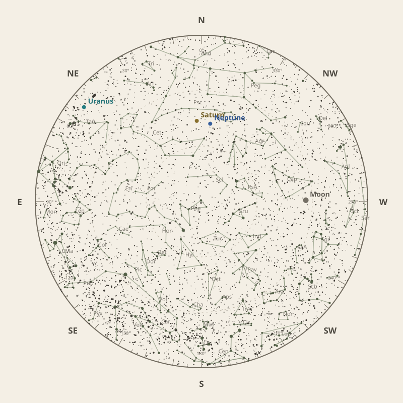
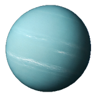
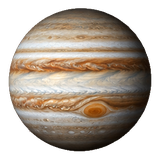

← Annual almanac
North is at the top; east is at the left. Solar System objects shown are above the horizon at 10 pm.
Monthly field almanac
November 2026
Uranus reaches opposition on 26 Nov 2026 and is highest around 1:00 am.
- New Moon
- 9 Nov Darkest skies
- Full Moon
- 25 Nov Brightest skies
- Best dark window
- 6 Nov 8h 40m
Current conditions
Checking the sky near Southern Tasmania, Australia…
Sky chart: 15 Nov 2026, 10 pm
Southern Tasmania, Australia local time.
Show static monthly chart

Night planner
Choose a date to see astronomical darkness, Moon interference, Galactic Centre visibility, and planet altitudes and times.
Best low-Moon dark periods this month
- 8:35 pm–5:16 am8h 40m · 18% Moon
- 8:37 pm–5:14 am8h 38m · 11% Moon
- 8:38 pm–5:13 am8h 35m · 5% Moon


Galactic Centre sessions
- 8:30 pm–10:10 pm1h 40m · core to 37°
- 8:31 pm–10:11 pm1h 40m · core to 36°
- 8:33 pm–10:03 pm1h 30m · core to 35°
Events
- HIP 37434 lunar occultation3:24 am; Moon at 12° altitude for the first listed contact.
- 2 Pallas68° altitude; magnitude 8.7.
- Uranus oppositionVisible for most of the night.
November highlights
- Occultations
Jupiter lunar occultation
10:31 am to 11:41 am; Moon at 25° altitude for the first listed contact.
- Minor planets
4 Vesta
52° altitude; magnitude 6.9.
- Planetary events
Mercury greatest western elongation
Morning sky; 19.6° from the Sun.
- Planets
Saturn
Best monthly date at 46° altitude.


Moon phases
67%
5%
29%
90%
80%
For faint deep-sky objects, observe when the Moon is below the horizon or weakly illuminated. For lunar relief, observe near the terminator; full Moon is best suited to ray systems and albedo features.
Download Moon phase CSV →

Planet visibility
Evening
- Neptune26 Nov · 9:00 pm48° · Excellent
- Saturn25 Nov · 9:30 pm46° · Excellent
 Neptune
Neptune Saturn
SaturnOvernight

Uranus27 Nov · 1:00 am27° · Good
Predawn

Jupiter30 Nov · 5:00 am30° · Good- Mars30 Nov · 5:00 am28° · Good
- Venus30 Nov · 5:00 am13° · Poor
- Mercury30 Nov · 5:00 am2° · Poor
 Mars
Mars Venus
Venus Mercury
Mercury